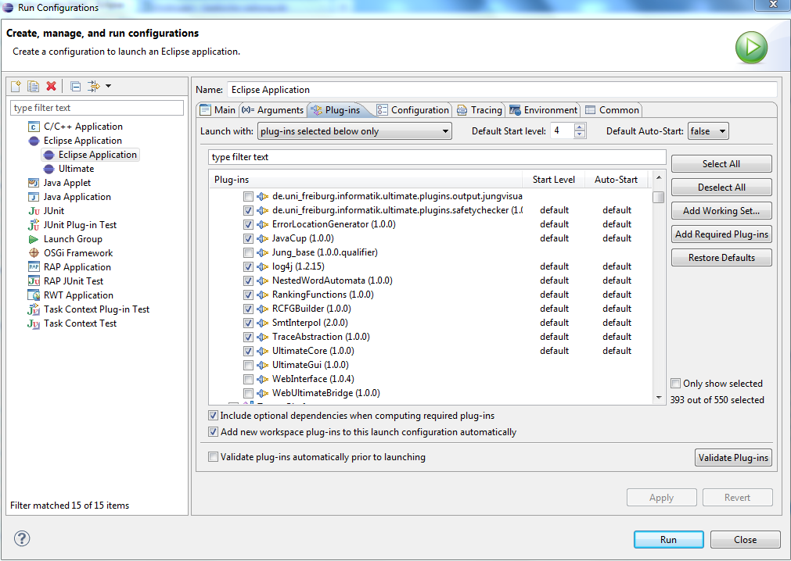

Project: CDTPlugin
Project Description
The CDTPlugin makes Ultimate usable inside Eclipse CDT, so that Ultimate is
now usable for regular C-Developers inside a normal IDE. To realize this,
the Plugin extends the Codan-Interface (Code Analysis) of CDT.
With the help of this Interface it is possible to create problem markers,
which are set directly into the normal editor. If you want to read more about
Codan, look at the projects web page
(Codan-Project).
Implementation Details
In this section the base classes of this plugin will be shortly described.
UltimateCChecker
This class is somehow the base class of this plugin, it extends
AbstractIndexASTChecker, so the process method obtains an already
parsed AST. This AST is passed to UltimateServices where we store it
for the translation. Since Ultimate must always start with a source
plugin, we use the CDTDummyParser, which basically takes the parsed AST
from UltimateServices and passes it to next tool in the toolchain.
When the toolchain is done the results are presented to the user.
Therefore there exists different problem types, which are declared in
the plugin xml. We need this because we want to distinguish between the
different Ultimate result types. So a counterexample is clearly a problem,
which is displayed with an error marker but a found invariant is some
additional information for the user, so the serverity is "Info".
So for example the following lines define a Codan problem for InvariantResults:
<problem
category="org.eclipse.cdt.codan.core.categories.Ultimate"
defaultEnabled="true"
defaultSeverity="Info"
description="Ultimate found an Invariant"
id="de.uni_freiburg.informatik.ultimate.cdt.codan.InvariantResult"
messagePattern="Ultimate found an Invariant here, ''{0}''"
name="Ultimate Invariants">
</problem>
UltimateCCheckerHelp
This provides information for the "CodanProblemDetailsView", this view
provides some additional information for a certain problem to the user.
This view is very limited, there are only two SWT-Widgets "Link". Which
not allow any formating of the displayed text. In general the main problem
of Codan is the very limited UI behavior. Another problem of this kind is
in the preferences, the choosing of the toolchain should work dynamically,
for this a dropdown-box would be helpful, but this simply not exist.
How To: Run the CDTPlugin inside Eclipse
-
Make sure that you have installed Eclipse-RCP and
Eclipse-CDT in the right way!
-
Open the manifest of this plugin ("META-INF/MANIFEST.MF"), in the upper
right corner you should see a the run symbol of Eclipse.
-
Now you choose "Run as an Eclipse application...", if you press this button
a new Eclipse instance will open.
-
You should recognize that this new Eclipse instance is somehow scrambled,
with some strange GUI-elements. This is because all plugins in the workspace
are deployed to this new instance. And the strange elements come from the
"UltimateGUI" plugin. To solve this we disable this plugin for our
"Run as Eclipse application" configuration.
-
To fix this point, go to "Run/Run Configuration...", now you should see there
a new Run Configuration, its name should be "Eclipse Application" or something
like that. If you choose this configuration, you should see on the right side
a tab called "Plug-Ins". Select this tab!
-
Now you should see the point "Launch with" and a Dropdown-Box, where "all
workspace and enabled target platform" is selected. Now you select there
"plugins selected below only".
-
Now in the box below a lot of plugins will show up. They should be grouped
under two major points, "Workspace" and "Target Platform". You should select
both so that every plugin is now selected. Then you simply deselect the
following plugins from the "Workspace" group. For more details look at the picture
below.
- UltimateGui
- JungBase
- de.uni_freiburg.informatik.ultimate.output.jungvisualization
- WebInterface
- WebUltimateBridge

-
When you start the Eclipse instance (Run-Button), everything should look ok now.
-
To start the Ultimate-Verification you simply select a C-Source File and press the
right mouse button, there you should see the point "Run C/C++ Code Analysis".
If you choose this point, Ultimate will start the verification. You can observe this
process in your Base-Eclipse instance, there the Ultimate-Log will show up.
-
The preferences for the Codan-Ultimate Plugin are located under the Point
"C/C++ / CodeAnalysis" in the main preferences. There you should see an Ultimate
group, where the different Result-Types are referenced as problems. Basically
they use all the same Checker, but in fact these are different problems, with
different severities (Error, Warning, Info). Of course more problems can be added,
how to do this read the "docu.txt", there you find some general information about
how the structure of the plugin looks like.
Known Problems
"OutOfMemory Exception [PermGen]"
It is not so clear why this happens sometimes, probably it is a problem with
the java version. To fix this, you simply add the following line to the VM
arguments in your "Run Configuration":
-XX:MaxPermSize=512M
This simply gives the perm section of the jvm more memory.
"Loader constraint violation: loader previously initiated loading for a
different type with name org/apache/log4j/Logger"
This problem occurs when the bundle "org.apache.log4j" is part of your
target platform. Now the ClassLoader tries to load the Ultimate bundle
"log4j", but this is not possible due its already loaded. Is not so easy
to fix this "bug", so for testing the plugin inside eclipse, just disable
the "org.apache.log4j" bundle from your target platform. But this does not
help for deploying the plugin. Maybe a new dependency management for log4j
would help.
How To: Deploy/Install the CDTPlugin
To use this plugin and the Ultimate verification you have to deploy the needed
plugins (make a jar file out of it) to the plugin folder of your Eclipse installation.
To do this open the manifest file again. Again on the upper right corner there is
a button called "Export deployable plugins and fragments". After pressing this
button a dialog will open where can select all plugins which are in the workspace.
Basically you need the CDTPlugin and Ultimate without the GUI-stuff. So you should
select all except of the following plugins:
- UltimateGui
- JungBase
- de.uni_freiburg.informatik.ultimate.output.jungvisualization
- WebInterface
- WebUltimateBridge
Now you can directly choose your plugin folder of the Eclipse installation and
deploy the plugins to this location. Then after a restart of Eclipse the installed
plugins should be installed correctly.